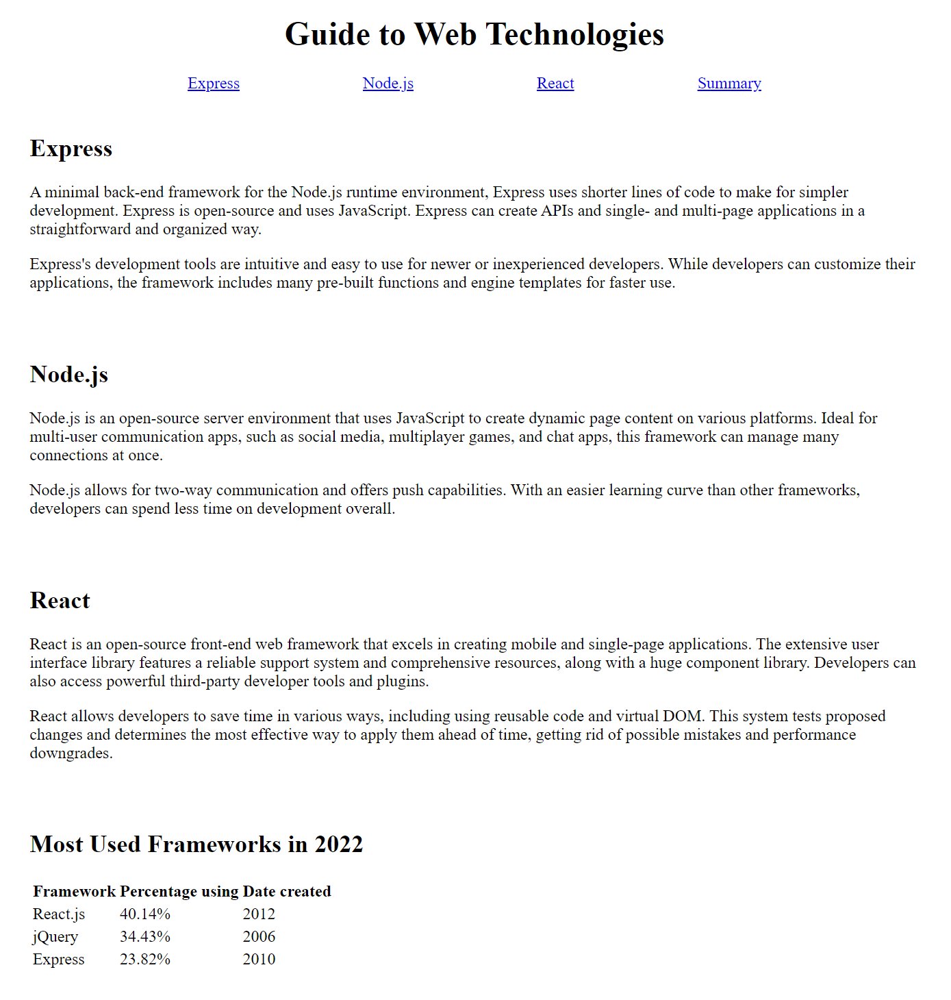
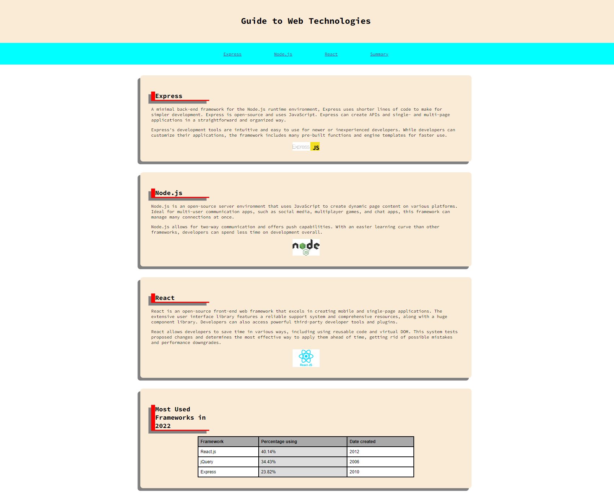
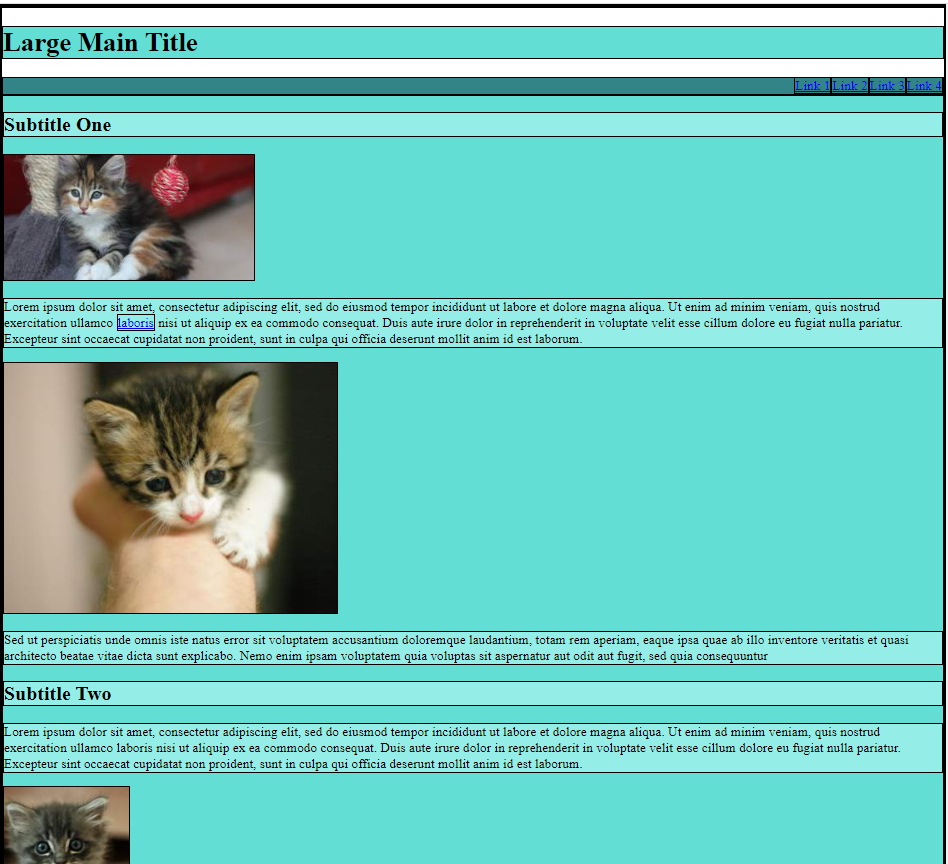
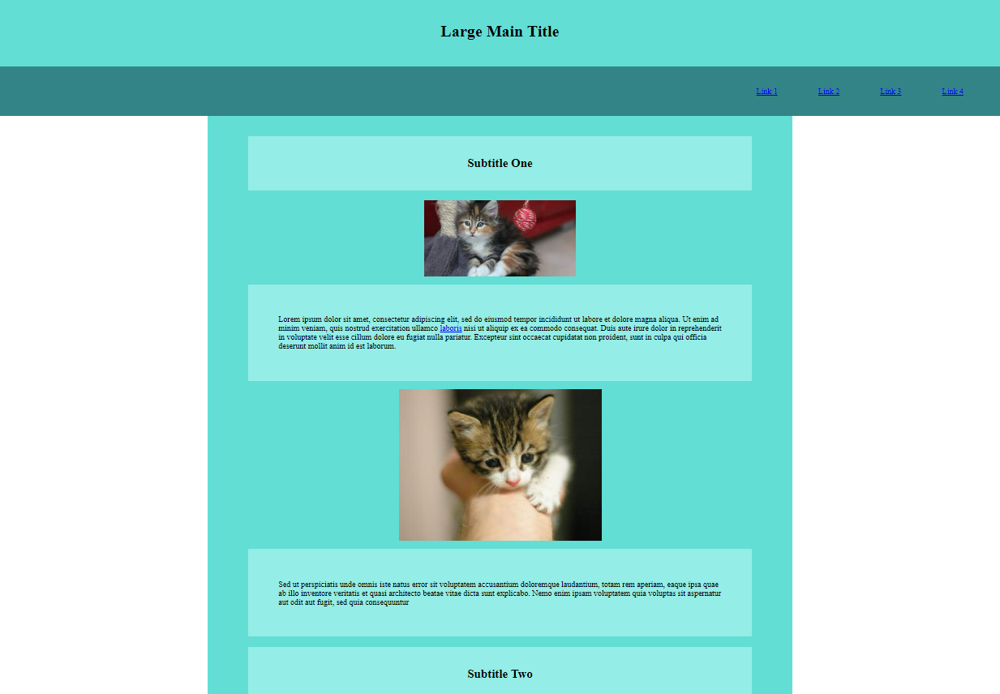

Resources
Presentation content for Theory Blocks 1 & 2:
- Google Slides
- Some of these slides may be skimmed over quickly so it is suggested that you refer back to slides in your own time as needed
Suggested reference links:
- W3Schools HTML
- W3Schools CSS
- Google...
Practical Block #1 Instructions:
In this task, you will use a combination of HTML and CSS to create and style a page with text, images, and a table. A skeleton HTML file is given to you with some text content that does not yet have HTML elements like paragraphs and headings. You will complete this file, and add your own CSS within the CSS file provided.
For all steps of this question, you should choose appropriate HTML tags, CSS selectors and where necessary add things like `ids` or `classes` to your HTML elements in order to be able to select them in CSS.
Task 1:
- Add HTML tags to the text content in the body of the HTML page so that all content is contained within appropriate HTML elements.
- Add appropriate CSS selectors and properties to style the content so it displays appropriately onscreen
- Use and "id" on each of the four main sections so that the four navigation links can link to these sections
- Make sure to use appropriate tags to structure the table effectively
- Centre align the main title and nagigation links
- Make sure to add some space between navigation links
When complete, the page should look something like this:
Task 2:
Now you should make further modifications to the style of the page to customise it and make it your own.
You should choose one of the suggested complex styles in order to challenge yourself to research new and interesting CSS properties and techniques.
In Task 2 of Practical Block #2, you will again select one of these design styles to develop, but you will need to choose a different one each time so think carefully about which design style you want to use first and second.
You will probably be mostly modifying the CSS; however, can and should modify the HTML as needed to add any new elements oor modify the attributes of existing elements.
You may modify the palceholder text, images and HTML elements as needed to fit with the design style and theme you choose. You can reorder content, remove content, add new content and new types of elements to your page.
While minimalism is a very effective style for web pages, we do NOT want minimalism in this task as the goal is to choose a style that will push you to play and research new, interesting and crazy things that can be achieved with CSS.
These are the requirements for page customisation; try to achieve as many of these as possible in the time available:
- Develop your page to achieve an interesting non-conventional design style from the follow list:
- Retro game style with pixelated text, graphics and style that makes the page look like it comes from the good ol' days of early computing; try looking up "8-bit graphics" or "pixel art" for inspiration
- Unreasonably loud and obnoxious; bright colours, lots of graphics and very "busy"; for example: LINGsCARS.com
- Cottagecore: an aesthetic that celebrates simple living and nature, particularly in the countryside
- A horror theme that makes the page as terrifying as possible
- Surprise and amaze us: choose a theme that wasn't in this list but make sure it is something that is surprising and amazing
- A custom colour palette that is different from default colours provided; consider using an online colour palette tool or a predefined colour palette; there are plenty of these you can research online
- A non-standard font that matches your chosen design theme
- Include some fancy CSS techniques that you've researched yourself
- Try to be bold and experimental; for this task it is better to have a less than perfect page that has allowed you to try some interesting CSS techniques than it is to have a polished page
- HAVE FUN!!
While this example below does not fit one of the themes above, it does demonstrate what the content can look like with some extra CSS properties and divs:
Categories for prizes:
- Wow factor
- Best interpretation of theme
- Technically impressive implementation
- Most consistent and polished interpretation of chosen design style
- Page that is the hardest to look at
- Most interesting bug that was found during development
Practical Block #2 Instructions:
Structuring a page with box model and basic CSS
Withing the practicalblck2 directory, you will find an HTML and CSS page that by default will look something like this:
The default page has most required HTML tags in the HTML file. The CSS file has some basic style settings to allow you to see some things like background colours and borders on the elements. Most elements are currently being displayed using default properties for padding, margin and other aspects of style.
Most aspects of the basic page structure can be achieved by modifying basic properties like padding, margin, text-align.
In the CSS file you will see that quite a few CSS selectors have been provided for you.
Task 1:
Using the CSS file provided to you, modify the CSS code to display page elements more effectively.
Task 1 does not need to be perfect as you will be developing your own more unique style in task 2; task 1 is designed to get you to aim to have reasonable default style that you can use as a base for your own style in task 2.
You should aim to have the elements on the page display something like this:
Your pages should now have:
- Padding and margin properties that position elements and text so they have sensible amounts of space between
- No text too close to the edge of elements
- The main section below the navigation bar should be narrower than the header and nav and be centred so that there is an even amount of margin space on either side regardless of the size or zoom of the browser window
- There should be some space around the main heading
- The navigation links should have space between, above and below links
- Subheadings and paragraphs should be laid out so that they display similar to the image above
- Any other aspects of style should be modified to look similar to the image above
- The page should display elements effectively when zooming in and out and when resizing the browser window
Task 2:
Now you should make further modifications to the style of the page to customise it and make it your own.
You should choose one of the suggested complex styles in order to challenge yourself to research new and interesting CSS properties and techniques.
You MUST use a different design style to the one you chose in Practical Block #1.
You will probably be mostly modifying the CSS; however, can and should modify the HTML as needed to add any new elements oor modify the attributes of existing elements.
You may modify the palceholder text, images and HTML elements as needed to fit with the design style and theme you choose. You can reorder content, remove content, add new content and new types of elements to your page.
While minimalism is a very effective style for web pages, we do NOT want minimalism in this task as the goal is to choose a style that will push you to play and research new, interesting and crazy things that can be achieved with CSS.
These are the requirements for page customisation; try to achieve as many of these as possible in the time available:
- Develop your page to achieve an interesting non-conventional design style from the follow list:
- Retro game style with pixelated text, graphics and style that makes the page look like it comes from the good ol' days of early computing; try looking up "8-bit graphics" or "pixel art" for inspiration
- Unreasonably loud and obnoxious; bright colours, lots of graphics and very "busy"; for example: LINGsCARS.com
- Cottagecore: an aesthetic that celebrates simple living and nature, particularly in the countryside
- A horror theme that makes the page as terrifying as possible
- Surprise and amaze us: choose a theme that wasn't in this list but make sure it is something that is surprising and amazing
- A custom colour palette that is different from default colours provided; consider using an online colour palette tool or a predefined colour palette; there are plenty of these you can research online
- A non-standard font that matches your chosen design theme
- Include some fancy CSS techniques that you've researched yourself
- Try to be bold and experimental; for this task it is better to have a less than perfect page that has allowed you to try some interesting CSS techniques than it is to have a polished page
- HAVE FUN!!
Categories for prizes:
- Wow factor
- Best interpretation of theme
- Technically impressive implementation
- Most consistent and polished interpretation of chosen design style
- Page that is the hardest to look at
- Most interesting bug that was found during development
Practical Block #3 Instructions:
Task: Creating a Personal Portfolio/CV Page
For this practical block, you should create a person portfolio or CV page that would allow you to introduce yourself to employers colleagues or clients.
You have been provided with an empty HTML and CSS page here: Practical Block #3 Page; however, you can create new files and add assets as needed.
You should get as creative as possible with this and challenge yourself to try some of the more complex HTML and CSS techniques we've covered and potentially research some extra techniques.
You may use your real details in this task if you want to create a proper portfolio; however, it is ok to use placeholder content to draft the format for sections. You may want to consider adding extra placeholder content for some sections so that you can prototype what you would want your portfolio to look like in a few years time. It can be aspirational.
Aim to use a more complex design style that demonstrates the effective use of more complex HTML and CSS. Imagine that you're using this portfolio to apply to a job that involves knowledge of CSS, try to showcase some well chosen design elements or complex CSS.
Categories for prizes:
...these will be announced during the session...